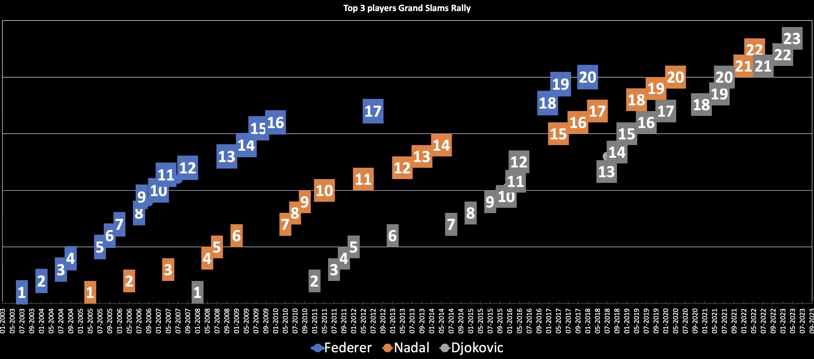

A few interesting findings:
- When Novak won his first Grand Slam in early 2008, Federer already had won 12 Grand Slams titles!
- Federer did not win any major title between 2009 and 2012, and between 2012 and 2017. He essentially only won 4 titles between 2010 and 2018!
- With 1 title less than Nole and just one more season to play, not sure Rafa can catch up with his rival prior to retiring!